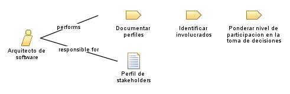

| Role: Arquitecto de software |
| |
 |
| Es el encargado de diseñar y estructurar la arquitectura del sistema de software |
|
Relationships
 |
| Primary Performs |
|
| Modifies |
|
Main Description
|
Es el encargado de diseñar y supervisar la estructura y comportamiento del software que se está desarrollando, siendo el
responsable de tomar decisiones importantes sobre la tecnología, la plataforma, la estructura de datos, la seguridad y la
escalabilidad del software, ademas de trabajar en estrecha colaboración con el equipo de desarrollo para asegurarse de que
el software se construya de acuerdo con las especificaciones y los requisitos del cliente. |
Staffing
| Skills |
-
Conocimiento profundo de las tecnologías y herramientas de desarrollo de software.
-
Experiencia en diseño y arquitectura de software.
-
Facidad para tomar decisiones importantes sobre la tecnología, la plataforma, la estructura
de datos, la seguridad y la escalabilidad del software.
-
Habilidad para comunicarse eficazmente con el equipo de desarrollo y otros miembros del
equipo, así como con los clientes y otros interesados en el proyecto.
-
Habilidad para liderar y motivar a un equipo de desarrollo.
-
Habilidad para trabajar en equipo y colaborar con otros miembros del equipo.
-
Habilidad para resolver problemas y tomar decisiones bajo presión.
-
Habilidad para adaptarse a los cambios y aprender nuevas tecnologías y herramientas.
-
Habilidad para planificar y gestionar proyectos de software.
-
Habilidad para documentar y presentar soluciones de software de manera clara y
concisa.
|
|